的学生订阅了《小学生数学报》，
的学生订阅了《小学生数学报》，在计数时，必须注意不能重复、遗漏．为了使重叠部分不被重复计算，人们研究出一种新的计数方法，即先不考虑重叠的情况，把包含于某内容中的所有对象的数目先计算出来，然后再把计数时重复计算的数目排斥出去，使得计算的结果既无遗漏又无重复，这种计数的方法称为容斥原理．
【解题技巧】
1．如果被计数的事物有A 、B 两类，那么，A 类B 类元素个数总和＝属于A 类元素个数＋属于B 类元素个数-既是A 类又是B 类的元素个数．
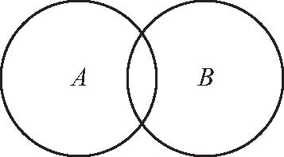
2．如果被计数的事物有A 、B 、C 三类，那么，A 类和B 类和C 类元素个数总和＝A 类元素个数＋B 类元素个数＋C 类元素个数-既是A 类又是B 类的元素个数-既是A 类又是C 类的元素个数-既是B 类又是C 类的元素个数＋既是A 类又是B 类而且是C 类的元素个数．
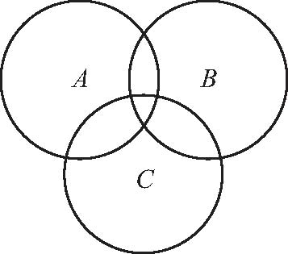
【基本公式】
A ∪B ＝A ＋B -A ∩B
A ∪B ∪C ＝A ＋B ＋C -A ∩B -B ∩C -C ∩A ＋A ∩B ∩C
注：A ∩B 表示集合A 与集合B 的公共元素，A ∪B 表示集合A 或集合B 的元素．
下列集合圈表示正确的是（ ）．
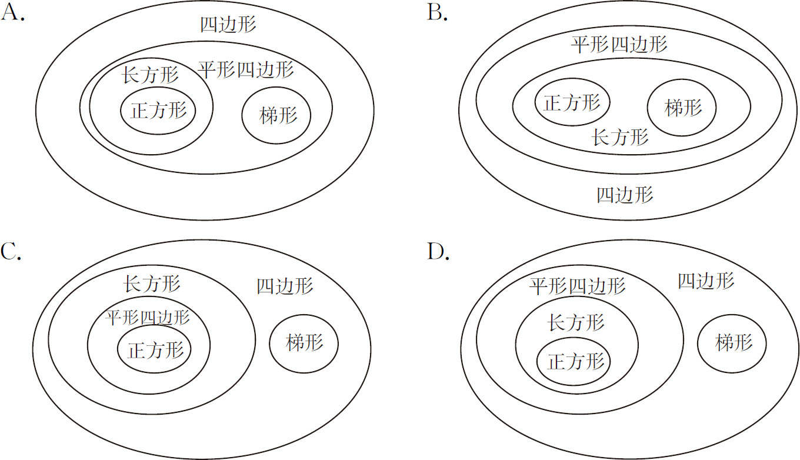
【答案】 D．
【解析】 根据定义进行分类，平行四边形的两组对边分别平行，而梯形只有一组对边平行．
【举一反三1】
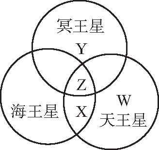
用圆圈表示星球上的空气，各星球上的空气所含的不同气体用不同的字母表示，相同的气体用相同的字母表示（见图）．已知天王星与海王星上的空气中都含有氦气，冥王星上没有．那么图中字母___表示氦气．
甲、乙、丙三人练习投篮，一共投了180次，有45次没投进，甲、乙共投进82次，乙、丙共投进89次，则丙投进___次．
【答案】 53．
【解析】 根据题意，三人一共投进180-45＝135（次），那么82＋89＝171（次），这里就多加了一次乙投篮的次数，可得出乙投进171-135＝36（次），由此即可求出丙投进为89-36＝53（次）．图示如下．
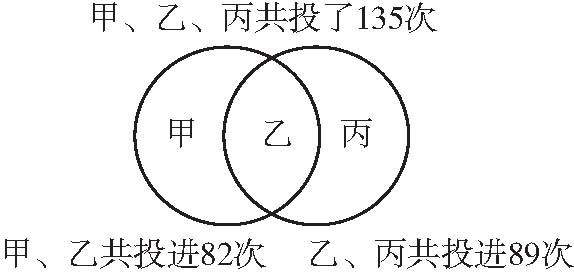
【举一反三2】
在一个炎热的夏日，几个小朋友去冷饮店，每个人至少要了一样冷饮，其中有6个人要了冰棍，6个人要了橙汁，4个人要了雪碧．只要冰棍和橙汁的有3个人，只要冰棍和雪碧的没有，只要橙汁和雪碧的有1个人；三样都要的有1个人．问：共有几个小朋友去了冷饮店？
有28人参加田径运动会，每人至少参加两项比赛．已知有8人没参加跑的项目，参加投掷项目的人数与参加跑和跳两项的人数都是17人．问：只参加跑和投掷两项的有多少人？
【答案】 3人．
【解析】 “每人至少参加两项比赛”说明没有不参加的，也没有参加一项比赛的，我们可以在下图中参加一项的区域用0表示．所以只参加跑和投掷两项的有28-17-8＝3（人）．
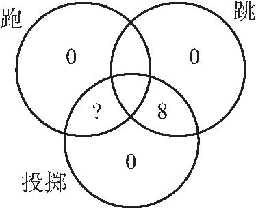
【举一反三3】
某校五年级（2）班有49人参加了数学、英语、语文学习小组，其中数学有30人参加，英语有20人参加，语文小组有10人．老师告诉同学既参加数学小组又参加语文小组的有3人，既参加数学又参加英语和既参加英语又参加语文的人数均为质数，而三个小组都参加的只有1人，求既参加英语又参加数学小组的人数．
五年级（1）班有
的学生订阅了《小学生数学报》，
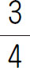
的学生订阅了《数学小灵通》．既订阅了《小学生数学报》又订阅了《数学小灵通》的学生至少占全班人数的___．【答案】
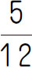
．【解析】 把总人数看作单位“1”，根据“有
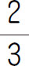
的学生订阅了《小学生数学报》，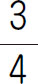
的学生订阅了《数学小灵通》”可知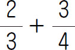
包括三部分，即只订阅《小学生数学报》的人数、只订阅《数学小灵通》的人数、两种都订阅的人数的2倍，所以都订阅的人数是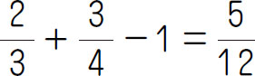
．【举一反三4】
某班同学参加升学考试，得满分的人数如下：数学20人，语文20人，英语20人，数学、英语两科满分者8人，数学、语文两科满分者7人，语文、英语两科满分者9人，三科都没得满分者3人．问：这个班最多有多少人？最少有多少人？
1．五年级（2）班一次语文、数学期末考试成绩如下：语文得100分的有10人，数学得100分的有12人，两门都得100分的有3人，两门功课都未得100分的有28人，这个班共有多少名学生？
2．某班45名同学参加体育测试，其中百米得优者20人，跳远得优者18人，又知百米、跳远都得优者7人，跳高、百米都得优者6人，跳高、跳远都得优者8人，跳高得优者22人，全班只有1名同学各项都没达优秀，求三项都得优的人数．
3．五年级共有96人，两种刊物每人至少订其中一种，有
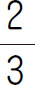
的人订《少年报》，有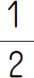
的人订《数学报》，两种刊物都订的有多少人？4．某班四年级时，五年级时和六年级时分别评出10名三好学生，又知四年级、五年级连续被评为三好生的有4人，五年级、六年级连续被评为三好生的有3人，四年级、六年级两年评上三好生的有5人，四年级、五年级、六年级三年没评过三好生的有20人，这个班最多有多少名同学？最少有多少名同学？
5．五年级（1）班有32名同学喜欢数学，27名同学喜欢英语，22名同学喜欢语文，既喜欢英语又喜欢数学的有12名，既喜欢英语又喜欢语文的有14名，既喜欢数学又喜欢语文的有10名，那么五年级（1）班至少有多少名同学？
6．小明和小龙两家合住一套房子，门厅、厨房和厕所为公用，在登记住房面积时，两家登记表见下表（单位：平方米）．
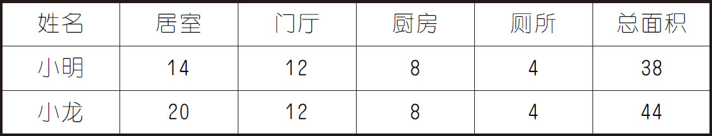
问：他们住的一套房子共有多少平方米？
7．全班有60个同学，喜欢足球的有
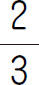
，喜欢篮球的有 ，喜欢羽毛球的有
，喜欢羽毛球的有 ，三项都喜欢的有22个同学，问：三项都不喜欢的最多有多少个同学？
，三项都喜欢的有22个同学，问：三项都不喜欢的最多有多少个同学？